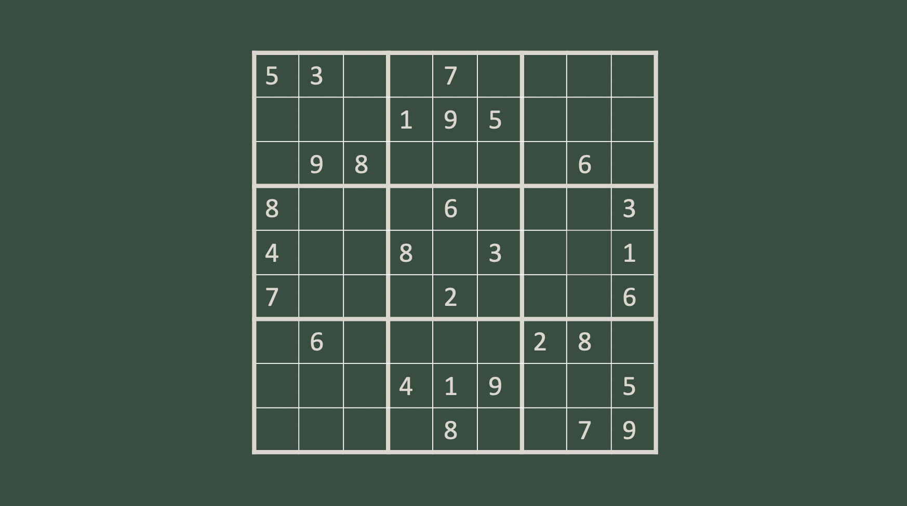

My Projects

OBJECT DIGITISATION USING NERF AND GAUSSIAN SPLATTING
One of my most engaging technical projects has been working with Monash DeepNeuron, our AI student club, on an innovative project involving digital rendering of stationary objects using cutting-edge technologies like NERF (Neural Radiance Fields) and Gaussian splatting. Our goal is to leverage NERF and Gaussian splatting technologies to generate detailed and accurate digital renderings of stationary objects.
To achieve this, we first code a KUKA robot in Java to capture various angles and perspectives around the object. This footage is then processed through COLMAP on a Linux system to serve as input for the NERF or Gaussian models. Currently, we are working to elevate the project by developing a user interface/application to simplify and refine the entire process.
Furthermore, we plan to automate the COLMAP processing and model creation/viewing steps, reducing the need for manual Linux commands and streamlining the user experience. This project perfectly embodies my passion for both software development and artificial intelligence, and my enthusiasm for learning.

SUDOKU SOLVER
An interactive sudoku game, generator, and solver:
The project enables users to engage with Sudoku puzzles in multiple ways, offering features that allow them to either insert numbers, restart or regenerate a new board, or even have the program solve the puzzle for them.
The solver employs techniques such as backtracking and a unique "value by single" strategy. The backtracking algorithm systematically tries all possible numbers until the solution is found, while the "value by single" method identifies board positions that can only have one valid number.
By offering users the ability to interact with the puzzle and engage in the solving process themselves, this project represents a balance between game design and algorithm development, blending my interests in problem-solving, user experience, and optimization algorithms.
You can find the code here on my Github.

WEBSITE
This website was made from HTML/CSS!
You can find the code here on my Github.